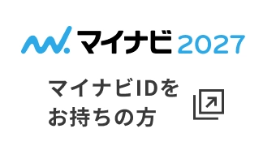
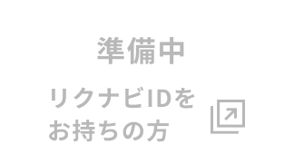

- 
- 
知識と経験を積んで頼られる
フロントヘ。
知識と経験を積んで頼られるフロントヘ。
- K.H
- マンション管理部 フロント営業
- 2022年入社｜福岡県出身
「何でもやります！」
面接では元気をアピール。
不動産関係の仕事に興味があったので、大学在学中に宅建（宅地建物取引士）の資格を取りました。先に入社していた大学の先輩から「人と話すのが好きなお前に向いてるんじゃないか」と紹介してもらったのが当社でした。それまでマンション管理について知らなかったのですが、自分の考えでそのマンションをより良くしていける仕事だと知り、興味がわき目指してみようと思いました。当社一本に絞っていたので、面接では「何でもやります！」と元気の良さを猛アピールしました（笑）。
仕事の厳しさを知った１年目。
学生気分からの脱却。
私の仕事は分譲マンションにお住まいの住居者様に対して、安心で快適な生活を送っていただくための工事提案や問題対応、資金計画の作成などを行なうことです。学生の頃から企画や提案をすることが好きだったので最初は自信があったのですが、自分がいいと思った案がお客様にはあまり響かなかったり、実際の仕事の難しさを痛感しました。入社して間もない頃は知識や経験も浅く、クレーム対応が上手くできなかったり、まさに試行錯誤の日々でした。
尊敬する上司の存在が
仕事のやる気にもつながる。
マンション管理は経験と知識が重要な仕事だと思います。対応力が素晴らしい上司がいるのですが、その方の仕事ぶりを見ていつもすごいなぁと尊敬しています。いつかは私もあんな風にどんな事にも対処できる力をつけたいです。職場にはそんな頼れる先輩がたくさんいるので、困った時はすぐに相談し、アドバイスをいただきます。不動産系は厳しい体育会系のイメージがあったのですが、当社は明るく気軽に話しやすい空気があります。先日も先輩と休日に牡蠣小屋や岩盤浴に行きました。年代関係なく本当に仲がいいんです！
大切なのは
誠実に向き合うこと。
入社3年目には担当のマンションを持つようになり責任感も増し、人間的にも少しは成長できたかなと思います。これからは後輩も増え、教えてもらう側から教える側になるという自覚を持って日々の業務に励んでいきたいです。私が仕事をする上で大切にしているのは、誠実に向き合うこと。トラブルが起こった時は、とにかくすぐに報告し問題の早期解決を心掛けています。理事会や住民の方などたくさんの人と話す機会も多く、コミュニケーション能力を求められる仕事ですが、場数を踏むことで身についてくると思います。心配せずに、まずはチャレンジしてほしいです！